התחלה
חלק 1לפני הכל
קודם מתקינים את התוכנה מהמחשב. רק אחר כך מרכיבים.
לדף ההתקנהעובדים בלי חשמל. המטען לא מחובר עד הסוף.
צריך מברג קטן שטוח. אולי גם מספריים.
למה קודם להתקין?
ככה, אם ההתקנה לא עובדת, אתה יודע שהבעיה בלוח ולא בחוטים.
חלק 2איך מחברים חוט
מה צריך לחלק הזה
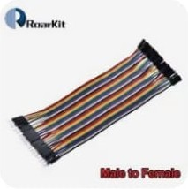
חוט עם פין וחור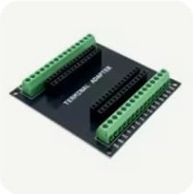
לוח הברגיםESP32 breakout- מחבר לחיצהWAGO
החוטים. לכל חוט יש קצה עם חור וקצה עם פין. את החור מלבישים על הפין של החלק. את הפין מכניסים לבורג או למחבר לחיצה.
בורג. הכנס את הפין לחור שמתחת לבורג. סובב עם המברג עד שהחוט תפוס. משוך קלות – הוא לא יוצא.
מחבר לחיצה. הרם את הידית הכתומה. הכנס את החוט. הורד את הידית.
השמות. ליד כל בורג כתוב שם קטן. "בורג 19" = הבורג שכתוב לידו 19 (לפעמים כתוב D19 – זה אותו דבר).
פלוס ומינוס. 5V ו-3V3 זה פלוס (חשמל). GND זה מינוס. אדום = פלוס, שחור = מינוס.
הצבעים חייבים להיות כמו כאן?
לא. הצבעים הם רק הצעה, כדי שיהיה קל לבדוק. מה שחשוב זה לחבר לפין הנכון.
✓ בדיקה: אתה יודע לחבר חוט לבורג ולמחבר לחיצה.
לוח וחשמל
חלק 3הלוח הראשי
מה צריך לחלק הזה
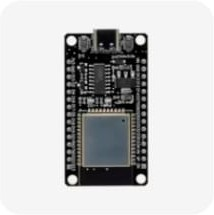
המוחESP32- לוח הברגים
קח את המוח (ESP32) – הלוח הארוך עם שקע ה-USB.
הנח אותו על לוח הברגים. השמות על המוח צריכים לשבת מול אותם שמות בלוח הברגים. לחץ עד הסוף.
הלבש את לוח הברגים על 4 הפינים בגב המתקן, ליד הכיתוב ESP32 BOARD. לחץ עד קליק.
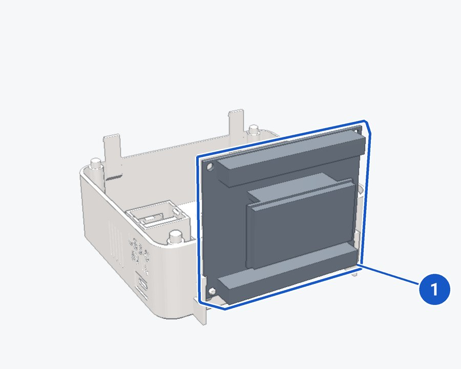
- 1לוח הברגים, בגב המתקן
למה זה חשוב?
הלוח בולט מהגב, אז המתקן צריך לעמוד בערך 3 ס״מ מהקיר.
✓ בדיקה: לוח הברגים תפוס בגב ולא זז.
חלק 4חשמל
מה צריך לחלק הזה
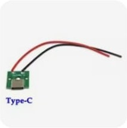
שקע החשמלUSB-C- 4 מחברי לחיצה
- 3 חוטיםאדום, שחור, כתום
הכנס את שקע החשמל לחור בקיר הימני של הבסיס (כתוב USB-C 5V IN).
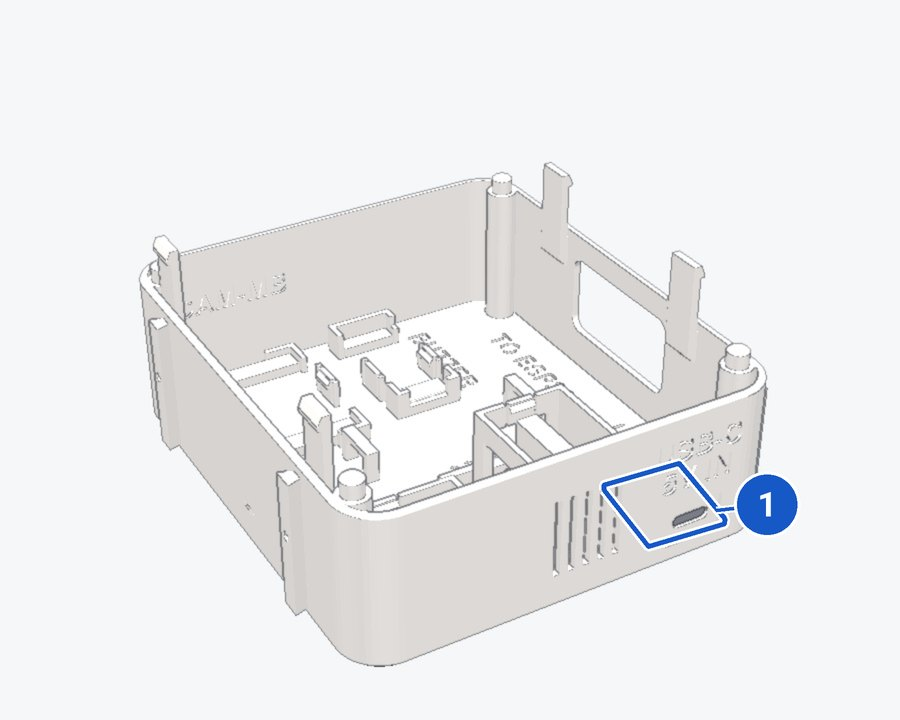
- 1שקע החשמל
שים 3 מחברי לחיצה על רצפת הגוף, כל אחד ליד השם שלו.
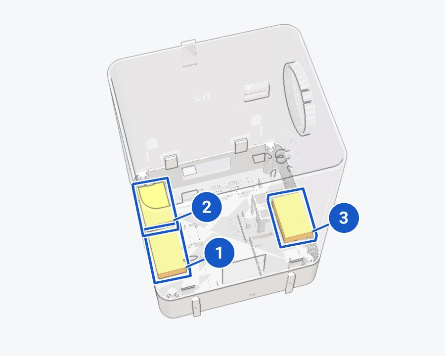
- 15V
- 2GND A
- 3GND B
את מחבר הלחיצה הרביעי קרא 3V3. שים אותו ליד השלושה. אין לו מקום משלו.
חבר את שני החוטים של שקע החשמל:
כבל מאיפה לאן צבע 1 החוט האדום של השקע מחבר 5V אדום 2 החוט השחור של השקע מחבר GND A שחור עכשיו מחברים את מחברי הלחיצה למוח. את הקצה עם הפין הכנס למחבר הלחיצה. את הקצה עם החור – לפי אחת משתי האפשרויות:
אפשרות א. ליד הבורג יש שורה של פינים קטנים? הלבש את הקצה עם החור על הפין שכתוב לידו VIN (או 5V) / GND / 3V3.
אפשרות ב. אין פינים? גזור את הקצה עם החור במספריים. קלף 8 מ״מ מהפלסטיק. הכנס את החוט החשוף מתחת לבורג VIN (או 5V) / GND / 3V3.
חבר את 3 החוטים:
כבל מאיפה לאן צבע 3 מחבר 5V בורג VIN (או 5V) אדום 4 מחבר GND A בורג GND שחור 3V3 מחבר 3V3 בורג 3V3 כתום
למה צריך מחבר לחיצה ל-3V3?
שלושה חלקים צריכים 3V3: המיקרופון, חיישן הנפילה והזמזם. שלושה חוטים מתחת לבורג אחד לא מחזיקים טוב. אז חוט אחד הולך מהבורג למחבר, ומהמחבר יוצאים שלושה.
אין לך מחבר לחיצה רביעי?
אז שני חוטים נכנסים מתחת לבורג 3V3, והשלישי הולך לפין 3V3 שליד הבורג, עם חוט שיש לו חור בשני הקצוות (נקבה-נקבה).
✓ בדיקה: משוך קלות כל חוט – אף אחד לא יוצא. שום חוט אדום לא נוגע בשחור.
חלקים קטנים
חלק 5המנוע
מה צריך לחלק הזה
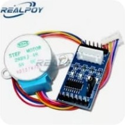
לוח המנוע + המנועULN2003 + 28BYJ-48- 6 חוטים
הכנס את לוח המנוע (הלוח עם 4 נורות אדומות ושקע לבן) לבסיס, מקדימה מימין. כתוב שם ULN2003.
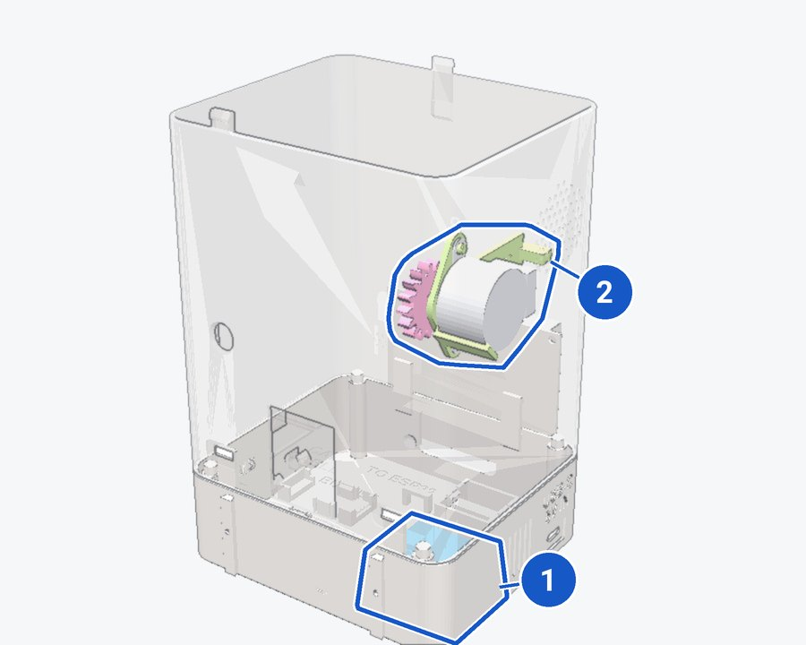
- 1לוח המנוע
- 2המנוע (נכנס בחלק 13)
חבר את התקע הלבן של המנוע לשקע הלבן בלוח המנוע. הוא נכנס רק בכיוון אחד – לא בכוח.
כבל מאיפה לאן צבע 7 התקע של המנוע השקע הלבן בלוח המנוע – חבר 4 חוטים מלוח המנוע למוח:
כבל מאיפה לאן צבע 8 IN1 בורג 19 כחול 9 IN2 בורג 18 סגול 10 IN3 בורג 17 אפור 11 IN4 בורג 16 לבן חבר חשמל ללוח המנוע:
כבל מאיפה לאן צבע 12 + מחבר 5V אדום 13 − מחבר GND B שחור
✓ בדיקה: 6 חוטים יוצאים מלוח המנוע, והתקע הלבן בפנים עד הסוף.
חלק 6הרמקול
מה צריך לחלק הזה
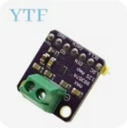
לוח הרמקולMAX98357A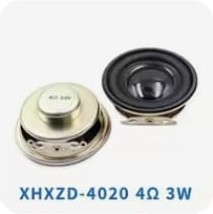
הרמקול- 5 חוטים
הכנס את לוח הרמקול לבסיס, באמצע מימין (כתוב AMP).
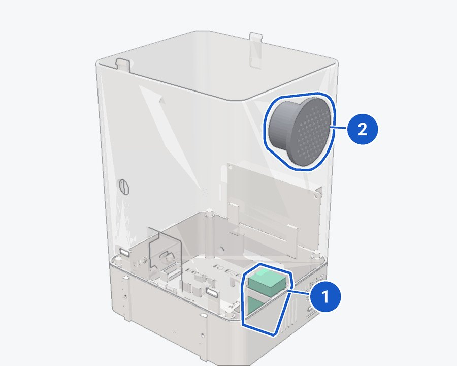
- 1לוח הרמקול
- 2הרמקול
הכנס את הרמקול לקיר הימני של הגוף (כתוב SPEAKER).
הכנס את שני החוטים של הרמקול לבורג הקטן בלוח הרמקול: אדום ל-+, שחור ל-−.
כבל מאיפה לאן צבע 14 החוטים של הרמקול הבורג הקטן בלוח הרמקול אדום / שחור חבר 3 חוטים מלוח הרמקול למוח:
כבל מאיפה לאן צבע 15 BCLK בורג 14 צהוב 16 LRC בורג 21 ירוק 17 DIN בורג 22 חום חבר חשמל ללוח הרמקול:
כבל מאיפה לאן צבע 18א VIN מחבר 5V אדום 18ב GND מחבר GND B שחור
איך מעבירים את החוטים?
חוט של חלק שיושב בגוף: מעבירים אותו דרך חור ברצפת הגוף, דרך התעלה בבסיס, ומוציאים מהחלון בגב (כתוב TO ESP32) אל לוח הברגים.
✓ בדיקה: הרמקול בקיר, והחוטים שלו תפוסים בבורג.
חלק 7המיקרופון
מה צריך לחלק הזה
 המיקרופוןINMP441
המיקרופוןINMP441- 6 חוטים
הכנס את המיקרופון (הלוח העגול הקטן) לקיר הקדמי של הגוף (כתוב MIC). החור הקטן שלו פונה החוצה.
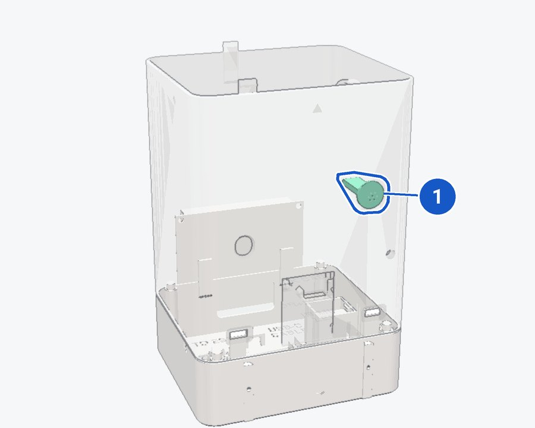
- 1המיקרופון
חבר 6 חוטים:
כבל מאיפה לאן צבע 19 SCK בורג 26 צהוב 20 WS בורג 25 ירוק 21 SD בורג 33 כחול 22א L/R בורג GND שחור 22ב GND בורג GND שחור 23 VDD מחבר 3V3 לא ל-5V!כתום בלוח הברגים יש כמה ברגים של GND. אפשר להשתמש בכל אחד. עד 2 חוטים בבורג.
איך מעבירים את החוטים?
חוט של חלק שיושב בגוף: מעבירים אותו דרך חור ברצפת הגוף, דרך התעלה בבסיס, ומוציאים מהחלון בגב (כתוב TO ESP32) אל לוח הברגים.
✓ בדיקה: VDD הולך למחבר 3V3 הכתום, לא ל-5V.
חלק 8חיישן הנפילה
מה צריך לחלק הזה
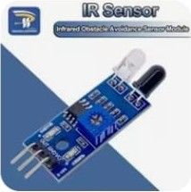
חיישן הנפילהFC-51- 3 חוטים
חיישן הנפילה רואה כל חטיף שנופל. הכנס אותו ליד המגלשה בגוף (כתוב IR).
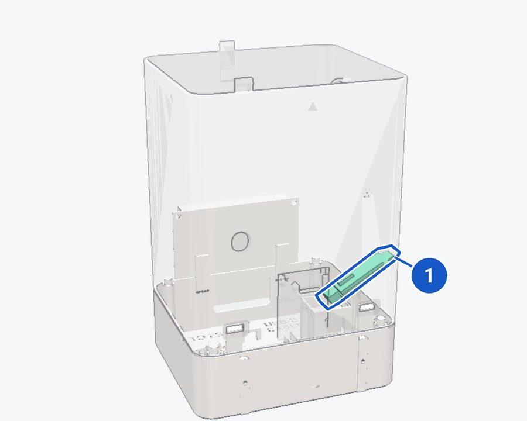
- 1חיישן הנפילה
חבר 3 חוטים:
כבל מאיפה לאן צבע 24 OUT בורג 32 לבן 25א VCC מחבר 3V3 כתום 25ב GND מחבר GND B שחור
אם משהו לא עובד
יש על החיישן בורג קטן לרגישות. אם הנורה הקטנה עליו דולקת כל הזמן, סובב את הבורג קצת נגד כיוון השעון.
✓ בדיקה: החיישן במקום, 3 חוטים מחוברים.
חלק 9הנורה הצבעונית
מה צריך לחלק הזה
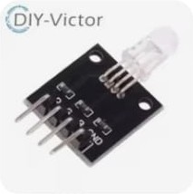
הנורה הצבעוניתRGB, KY-016- 4 חוטים
הכנס את הנורה הצבעונית לקיר הקדמי של הגוף (כתוב RGB LED). הנורה יוצאת מהחור.
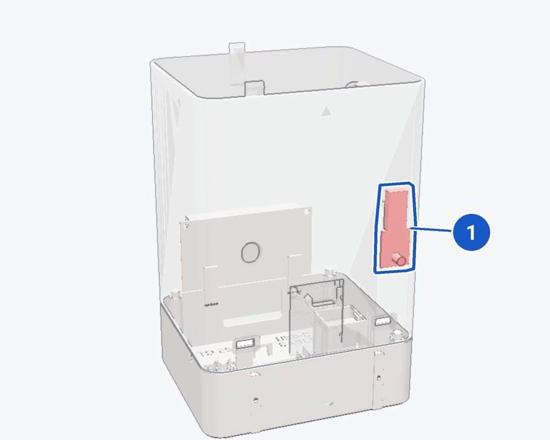
- 1הנורה הצבעונית
חבר 4 חוטים:
כבל מאיפה לאן צבע 26 R בורג 4 אדום 28א G בורג 13 ירוק 28ב B בורג 5 כחול 27 − בורג GND שחור
✓ בדיקה: הנורה מציצה מהחור בקיר.
חלק 10הזמזם
מה צריך לחלק הזה
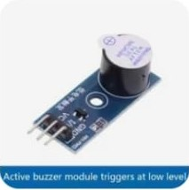
הזמזםbuzzer- 3 חוטים
הכנס את הזמזם (עושה קליק וצפצוף) לבסיס, משמאל (כתוב BUZZER).
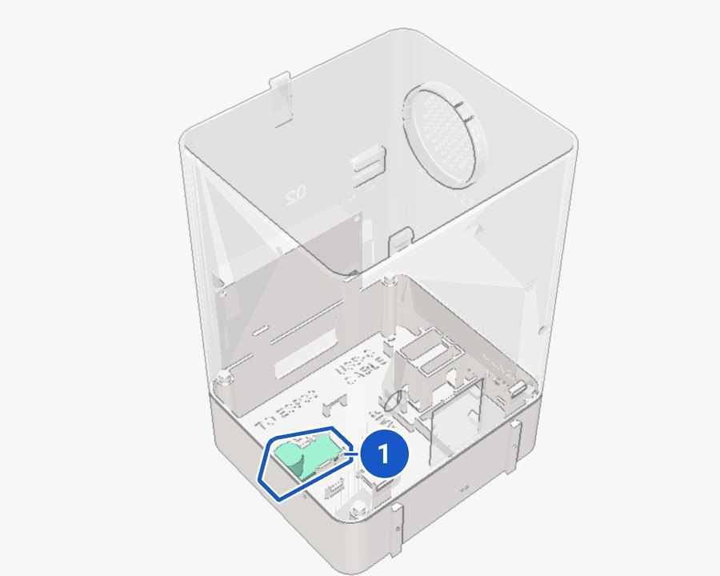
- 1הזמזם
חבר 3 חוטים:
כבל מאיפה לאן צבע 29 I/O בורג 23 ורוד 30א VCC מחבר 3V3 לא ל-5V!כתום 30ב GND בורג GND שחור
למה לא 5V?
ב-5V הזמזם יכול לצפצף כל הזמן.
✓ בדיקה: VCC במחבר 3V3.
חלק 11המצלמה
מה צריך לחלק הזה
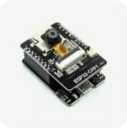
המצלמה + לוח הצריבהESP32-CAM + MB- 2 חוטים
קח את המצלמה (ESP32-CAM). העדשה צריכה לצאת בחלון בקיר הקדמי של הגוף (כתוב CAM).
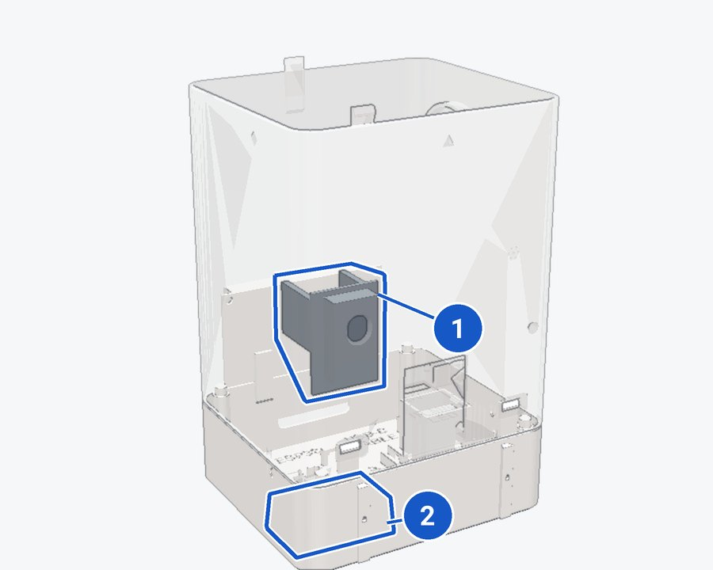
- 1המצלמה
- 2לוח הצריבה
הכנס את הקצה העליון של המצלמה מתחת לוו.
דחוף 1–2 מ״מ למטה ושחרר. היא ננעלת.
חבר חשמל למצלמה:
כבל מאיפה לאן צבע 5 5V במצלמה מחבר 5V אדום 6 GND במצלמה מחבר GND A שחור את לוח הצריבה (MB) שים בבסיס, משמאל מקדימה (כתוב CAM-MB). הוא לא מחובר לכלום.
למה רק 2 חוטים?
המצלמה מדברת עם המתקן בוויי-פיי. היא צריכה רק חשמל. לוח הצריבה משמש רק כדי להתקין עליה תוכנה מהמחשב.
✓ בדיקה: מחבר 5V מלא עכשיו: שקע, מוח, לוח מנוע, לוח רמקול, מצלמה.
הדלקה
חלק 12בדיקה והדלקה ראשונה
אדום לא נוגע בשחור. עבור על כל החוטים האדומים.
המיקרופון, חיישן הנפילה והזמזם מחוברים למחבר 3V3, לא ל-5V.
משוך קלות כל חוט. אף אחד לא יוצא.
חבר לשקע החשמל מטען טלפון רגיל. הוא צריך להיות 5V ו-2A או יותר.
הנורה הצבעונית מהבהבת לבן לרגע. זה סימן שהמתקן נדלק.
בטלפון, פתח את dogtreat.local. למעלה לחץ "בדיקת חיבורים" ועשה מה שכתוב.
אם משהו לא עובד
הבדיקה אומרת איזה כבל לבדוק, לפי המספרים בדף הזה. נתק את המטען לפני שאתה נוגע בחוטים.
הדף dogtreat.local לא נפתח? בדף ההתקנה יש הסבר איך מוצאים את הכתובת.
✓ בדיקה: הבדיקה עברה. אפשר לסגור את המתקן.
הרכבה
חלק 13איך יודעים מה הולך לאן
על כל חלק מודפס מספר. ככה יודעים איזה חלק זה.
על כל חיבור יש סימן (משולש, כוכב, פרפר…) על שני החלקים. מחברים כך שהסימנים יושבים אחד ליד השני.
T = צד החטיפים (שמאל). F = צד האוכל (ימין).
לא מוצא מספר?
על הטבעות הקטנות 18 ו-19 אין מקום למספר. הן יושבות על הציר 17.
חלק 14הגוף על הבסיס
מה צריך לחלק הזה
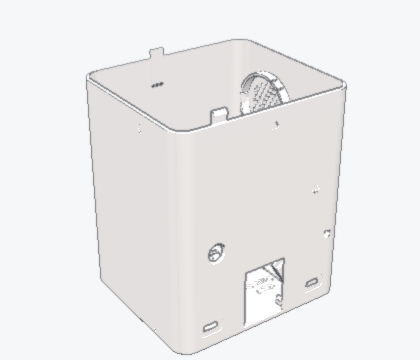
הגוףמספר 2
הנח את הגוף (02) על הבסיס. הסימן: פרפר.
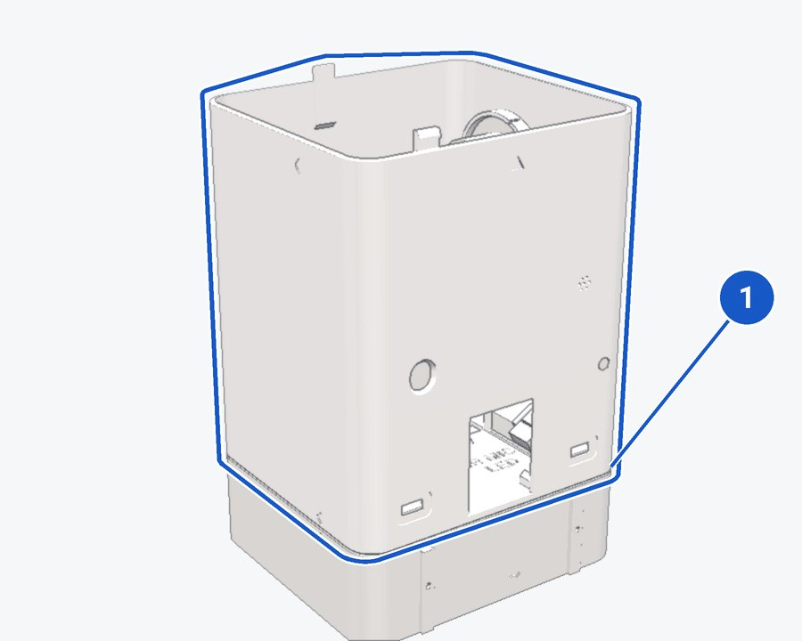
- 1הגוף
4 הפינים בפינות נכנסים לחורים. לחץ עד 4 קליקים.
שים לב שאף חוט לא נתפס באמצע.
✓ בדיקה: הגוף לא זז כשמנסים להרים אותו.
חלק 15לוחית המנוע
מה צריך לחלק הזה
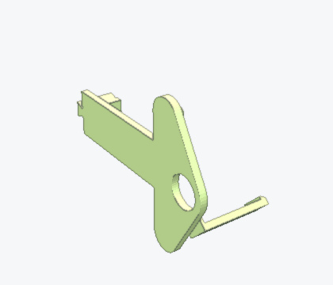
לוחית המנועמספר 13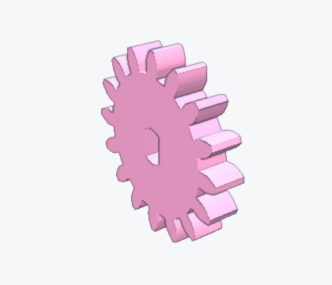
גלגל שיניים קטןמספר 14
קח את לוחית המנוע (13), עם המנוע וגלגל השיניים הקטן (14) עליה.
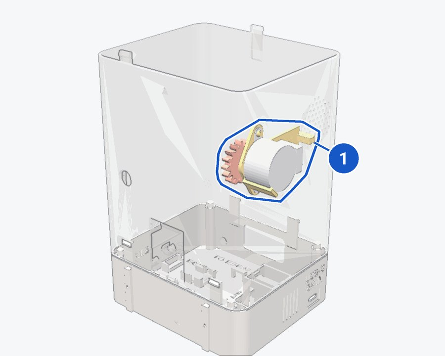
- 1לוחית המנוע
הכנס אותה למסילה בקיר האחורי של הגוף. הסימן: T.
דחוף הצידה עד קליק.
✓ בדיקה: הלוחית תפוסה ולא נופלת.
חלק 16מושב הקערה והמגירה
מה צריך לחלק הזה
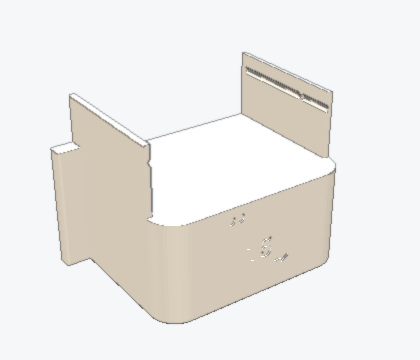
מושב הקערהמספר 16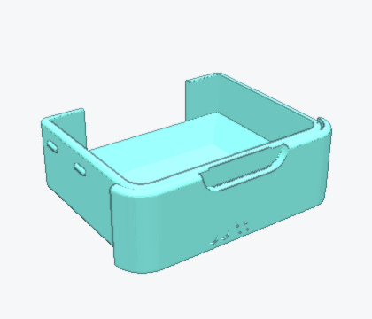
המגירהמספר 11
הורד את מושב הקערה (16) ישר למטה על 2 המסילות של הבסיס, עד קליק. הסימן: חץ.
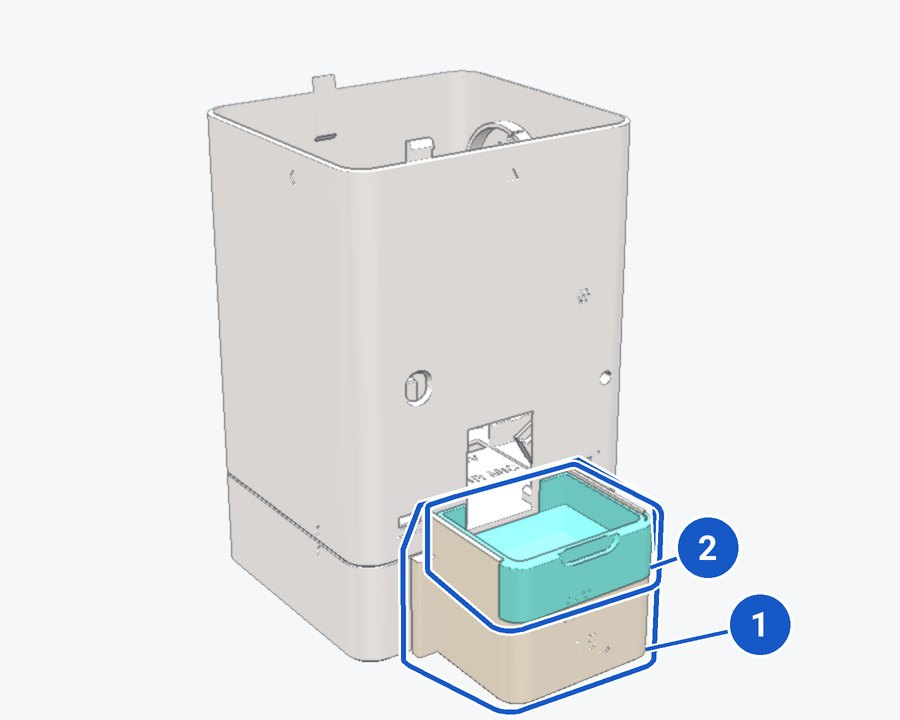
- 1מושב הקערה
- 2המגירה
הכנס את המגירה (11) עד קליק. הסימן: שתי נקודות.
✓ בדיקה: המגירה נכנסת ויוצאת בקלות.
חלק 17הגלגלים על הציר
מה צריך לחלק הזה
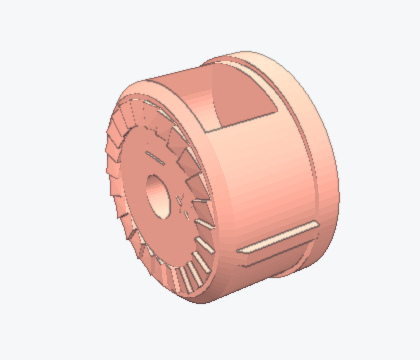
גלגל החטיפיםמספר 06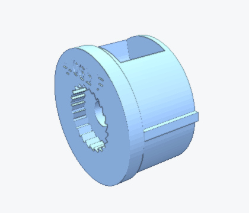
גלגל האוכלמספר 06b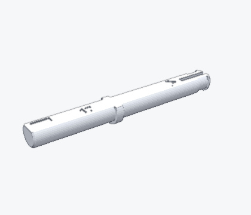
הצירמספר 17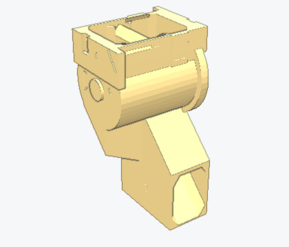
בית הגלגליםמספר 05
שים את גלגל החטיפים (06) – צד T – בקצה השמאלי של הציר (17). הסימן: פס.
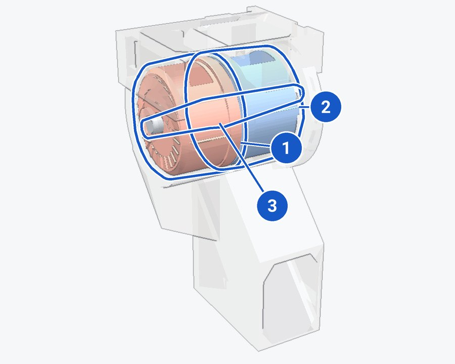
- 1גלגל החטיפים
- 2גלגל האוכל
- 3הציר
שים את גלגל האוכל (06b) – צד F – בקצה הימני. הסימן: חץ-זווית.
החלק את הציר לתוך בית הגלגלים (05), מהצד של מכסה הקצה. גלגל החטיפים נכנס ראשון. הסימנים: כוכב ופלוס.
✓ בדיקה: הציר מסתובב חופשי ביד.
חלק 18מכסה הקצה וגלגל השיניים
מה צריך לחלק הזה
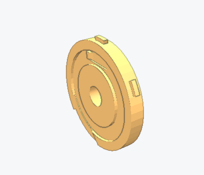
מכסה הקצהמספר 12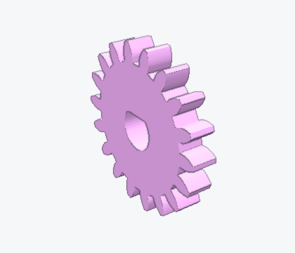
גלגל שיניים גדולמספר 15
הכנס את מכסה הקצה (12) לבית הגלגלים. הסימן: משושה.
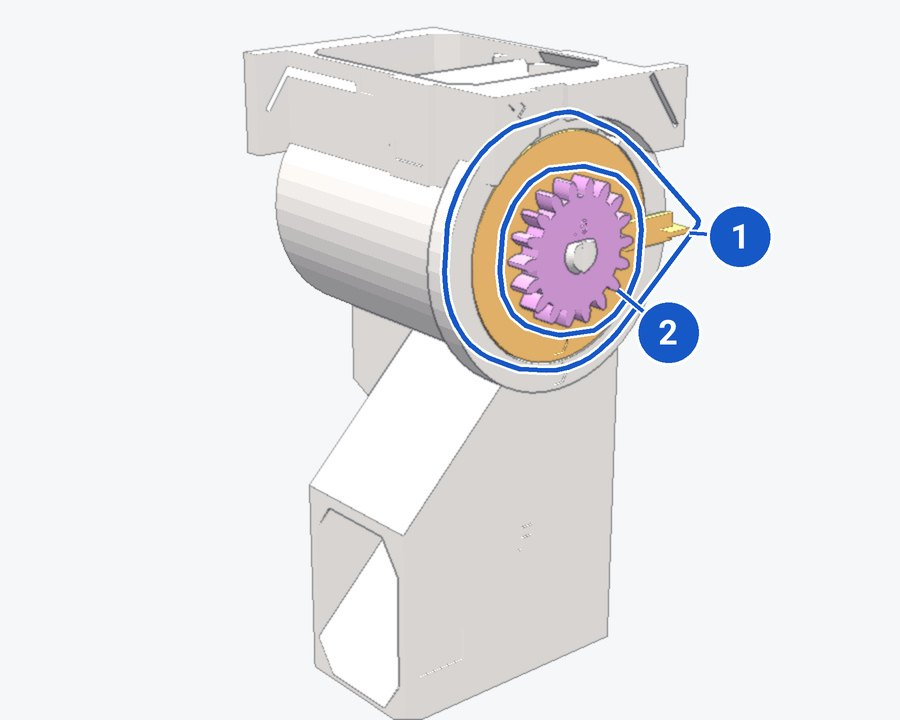
- 1מכסה הקצה
- 2גלגל השיניים הגדול
סובב אותו קצת קדימה עד קליק.
דחוף את גלגל השיניים הגדול (15) על קצה הציר עד קליק. הקצה של הציר שטוח מצד אחד – יש רק דרך אחת.
✓ בדיקה: גלגל השיניים מסובב את הציר.
חלק 19מחזיקי הדשים
מה צריך לחלק הזה
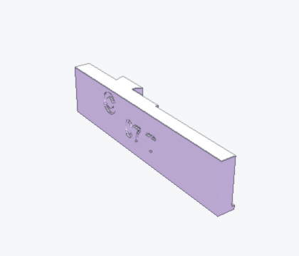
מחזיק דש חטיפיםמספר 07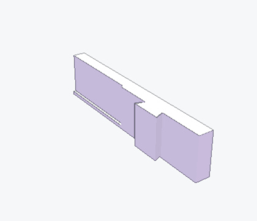
מחזיק דש אוכלמספר 07b
החלק את 07 (T) משמאל למטה, עד הסוף. הסימן: טבעת.
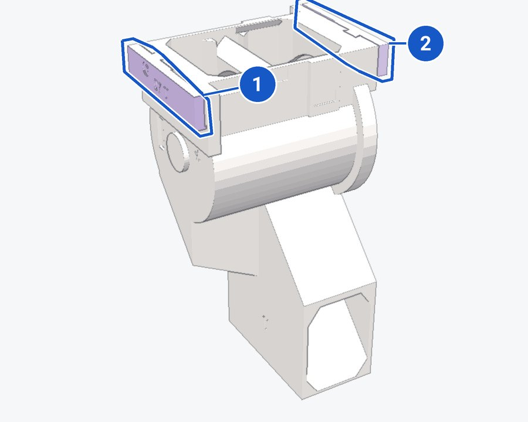
- 107 – חטיפים
- 207b – אוכל
החלק את 07b (F) מימין למטה, עד הסוף. הסימן: X.
חלק 20המיכל
מה צריך לחלק הזה
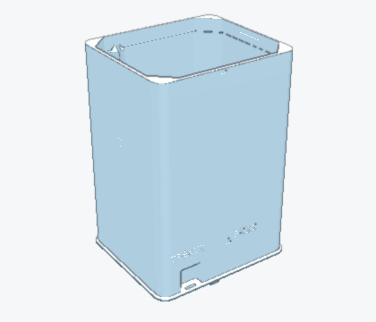
המיכלמספר 03
הכנס את הבליטה של המיכל (03) לפתח בבית הגלגלים. הסימן: ריבוע.
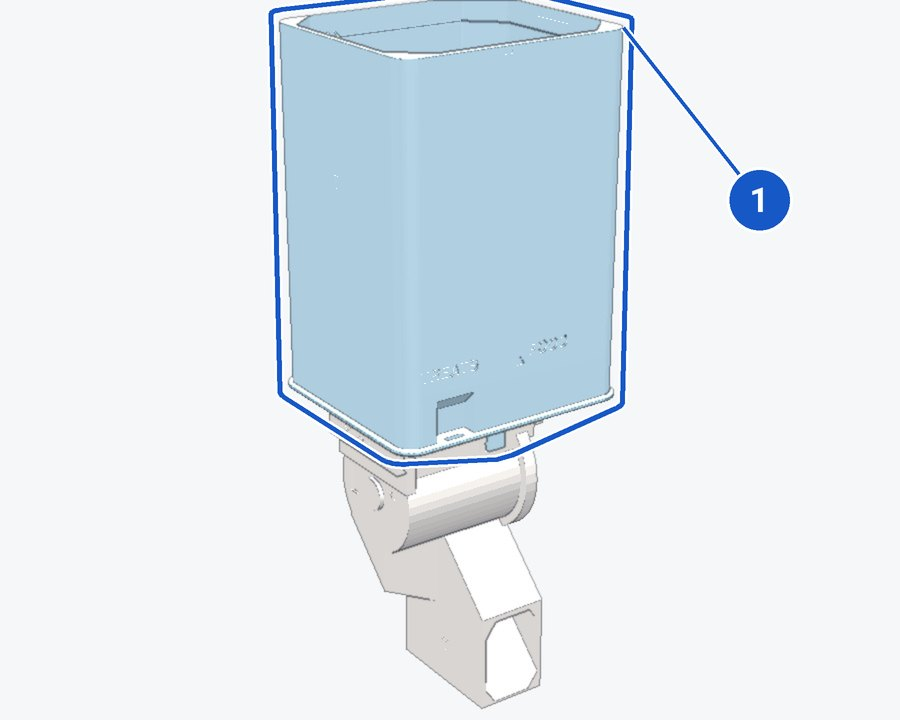
- 1המיכל
לחץ עד ששני הווים נקלקים.
✓ בדיקה: המיכל תפוס בשני הצדדים.
חלק 21הכל לתוך הגוף
הרם את כל מה שבנית בחלקים 17–20 ביחד.
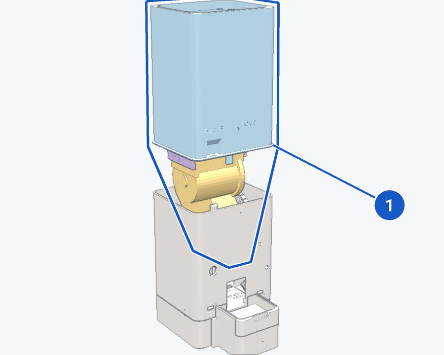
- 1כל החלק שבנית
הורד ישר למטה לתוך הגוף. הסימנים: משולש ויהלום.
לחץ עד ששתי הלשוניות למעלה נקלקות. גלגלי השיניים נכנסים אחד לשני לבד.
✓ בדיקה: כשמסובבים את גלגל השיניים הגדול, הקטן זז איתו.
חלק 22מחיצה ומכסה
מה צריך לחלק הזה
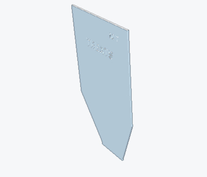
המחיצהמספר 20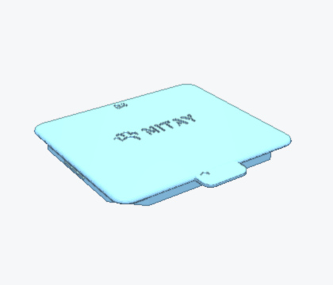
המכסהמספר 04
הורד את המחיצה (20) במסילות. הצד שכתוב עליו TREATS – לשמאל.
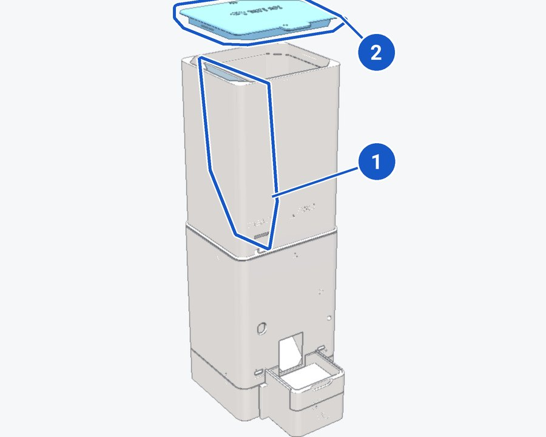
- 1המחיצה
- 2המכסה
שים את המכסה (04) עד קליק. הסימן: חצי עיגול.
✓ בדיקה: המתקן הראשי גמור.
יחידה חיצונית
חלק 23החלקים לתוך הקופסה
מה צריך לחלק הזה
 בית הסוללה18650
בית הסוללה18650 לוח הטעינהCN3791
לוח הטעינהCN3791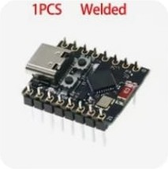
הלוח הקטןESP32-C3- מיקרופוןINMP441
 חיישן התנועה הקטןAM312
חיישן התנועה הקטןAM312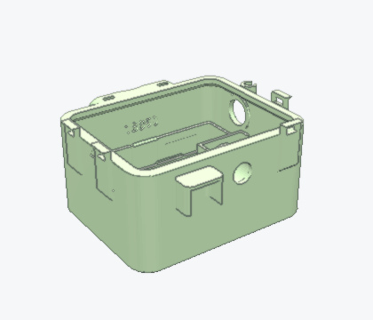
הקופסהמספר 08
הכנס את בית הסוללה לשקע שלו בקופסה (08). הוא נקלק מתחת לשפות.
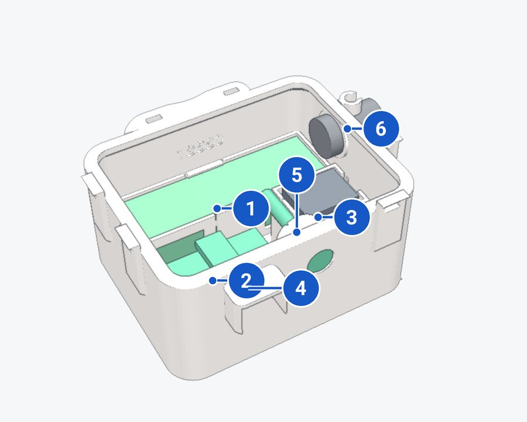
- 1בית הסוללה
- 2לוח הטעינה (מהפאנל הסולארי)
- 3הלוח הקטן (המוח של החוץ)
- 4המיקרופון
- 5חיישן התנועה הקטן
- 6האטם של הכבל
הכנס את לוח הטעינה לשקע שלו.
הכנס את הלוח הקטן (ESP32-C3) לשקע שלו.
הכנס את המיקרופון לשקע שלו.
הכנס את חיישן התנועה הקטן (AM312). הוא רואה תנועה בחוץ.
העבר את הכבל של הפאנל הסולארי דרך האטם (PG7) והדק אותו.
לפני שמחברים את הלוח הקטן למחשב
הוצא קודם את הסוללה.
✓ בדיקה: כל החלקים בשקעים ולא זזים.
חלק 24החוטים בחוץ
מה צריך לחלק הזה
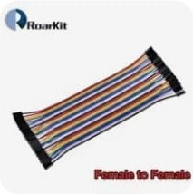
חוטים עם חור בשני הקצוותנקבה-נקבה
כאן החוטים הם עם חור בשני הקצוות. כל קצה נלבש על פין.
חבר את החשמל:
כבל מאיפה לאן צבע 32 הפאנל הסולארי + / − לוח הטעינה, SOLAR דרך האטםאדום / שחור 33 בית הסוללה לוח הטעינה, BAT+ / BAT− אדום / שחור 34 לוח הטעינה, יציאה + / − הלוח הקטן, 5V / GND 5V, לא 3V3!אדום / שחור חבר את המיקרופון:
כבל מאיפה לאן צבע 35א SCK / WS / SD פין 4 / 5 / 6 בלוח הקטן צהוב / ירוק / כחול 35ב L/R ו-GND / VDD GND / 3V3 בלוח הקטן שחור / כתום חבר את חיישן התנועה הקטן:
כבל מאיפה לאן צבע 36 OUT / + / − פין 3 / 3V3 / GND בלוח הקטן לבן / כתום / שחור
שים לב: הרבה חוטים לפין אחד
בלוח הקטן יש פין GND אחד ופין 3V3 אחד, אבל מגיעים אליהם כמה חוטים. על פין אחד נכנס רק חוט אחד. את זה עוד נסדר לפני שתגיע לשלב הזה.
✓ בדיקה: אף חוט לא רופף.
חלק 25סגירה ופאנל סולארי
מה צריך לחלק הזה
- המכסהמספר 09
- מסגרת הפאנלמספר 10
- הפאנל הסולארי
שים את חוט האטם בחריץ שמתחת למכסה (09).
- 1המכסה
הנח את המכסה. הסימן: משולש. לחץ עד ש-4 הזרועות בצדדים נקלקות.
לחץ את הפאנל הסולארי לתוך המסגרת (10). 8 שפות נקלקות.
- 1הפאנל במסגרת
לחץ את 2 הפינים של המסגרת לתוך 2 הלסתות במכסה. הסימן: נקודה.
בחר זווית: 15, 30, 45 או 60 מעלות. החץ מראה.
קשור את הקופסה עם 2 אזיקונים דרך התעלות בגב, סביב מוט או מעקה.
למה לקשור?
רוח חזקה יכולה להפיל אותה.
✓ בדיקה: היחידה החיצונית קשורה והפאנל פונה לשמש.